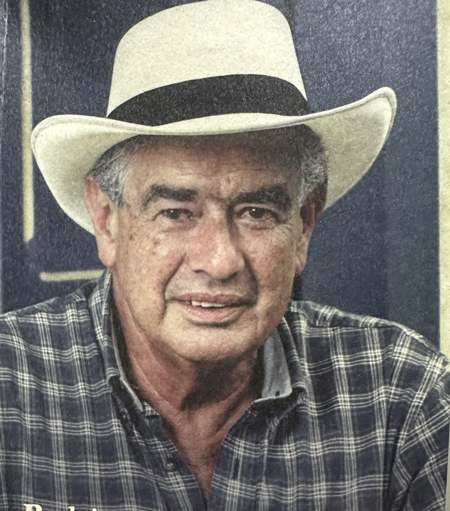

Rodrigo Restrepo Puerta (1937-2019) fue un visionario nacido en Bolívar, Antioquia, cuya creatividad y amor por la cultura dejaron un legado imborrable. Fundador de proyectos icónicos como Cauca Viejo y La Mielera, transformó sueños en realidades que exaltan la tradición antioqueña.
Poeta, emprendedor y amante de la vida, Rodrigo vivió con pasión, dejando una huella profunda en su familia, su tierra y quienes tuvieron el privilegio de conocerlo.

Nos enfocamos en brindar experiencias únicas e inolvidables en el Suroeste antioqueño, dando a conocer la historia de la fundación de Cauca Viejo y el legado de Rodrigo Restrepo Puerta.
Ofrecemos experiencias turísticas auténticas y memorables, destacando la riqueza histórica, cultural y natural de la región.
A través de recorridos guiados y actividades, buscamos conectar a los visitantes con la esencia del fundador Rodrigo Restrepo Puerta y la Colonización Antioqueña.